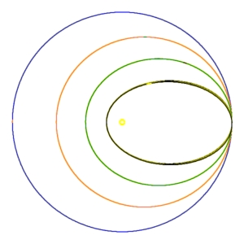
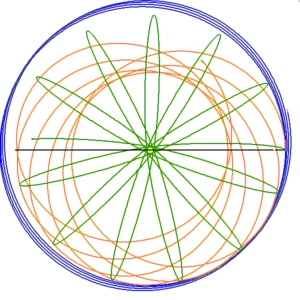

|  | ellipse_demo.html | Dec 4 08:10 | 10587 Bytes |
|  | soft_demo.html | Dec 4 08:10 | 10969 Bytes |
| kepler_matlab_octave.m.txt | Dec 3 12:16 | 9 Bytes | |
| keplerd.m | Dec 3 12:16 | 1398 Bytes | |
| kepler_ellipse_demo.html.txt | Dec 3 12:15 | 17 Bytes | |
| kepler_soft_demo.html.txt | Dec 3 12:14 | 14 Bytes |